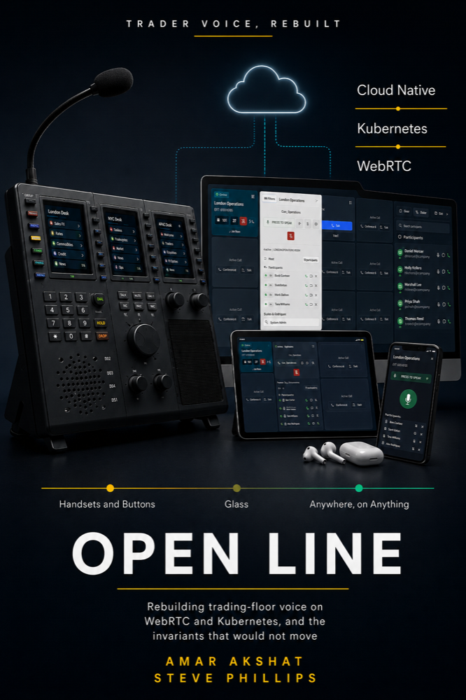
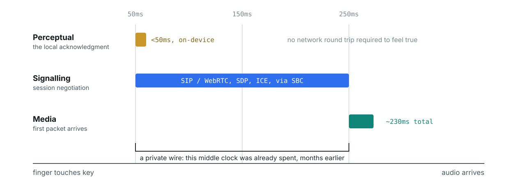
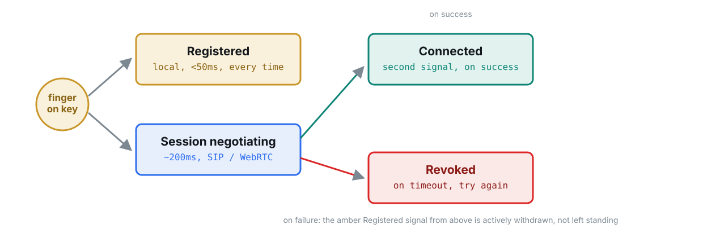
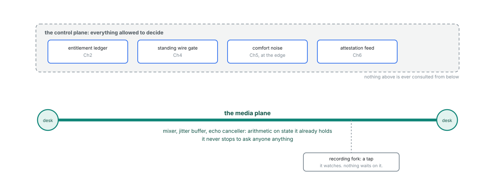
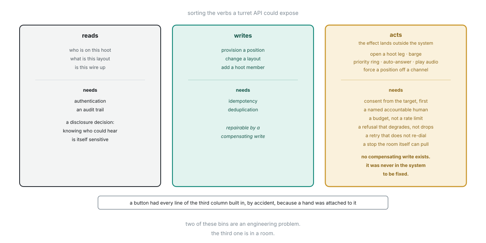

Trader voice, rebuilt
Rebuilding trading-floor voice on WebRTC and Kubernetes, and the invariants that would not move.
Chapter One is 2,200 words and needs no email. The book is 196 pages and 33 diagrams.

A trader presses a key and is already speaking. No dial tone, no ringing, no hello. Chapter One
The channel has been open since seven this morning and nobody joined it, because a system that announced who was listening would be useless.
Behind that key sits forty years of accumulated engineering, most of it undocumented, some of it accidental, and almost none of it written down anywhere a modern team would find it. The trading floor is the last place in finance still running a device that feels like 1987. This is the story of what happened when someone tried to replace it.
Open Line follows a rebuild of that system on WebRTC and Kubernetes, and asks one question of every feature, old and new.
The question the book keeps asking
The answers are frequently uncomfortable. Most of what looks like legacy turns out to encode an answer somebody would otherwise have to rediscover. Some of what looks essential turns out to be a period detail nobody revisited.
It turns out to be about certainty. The number traders defend is not the one an engineer would have optimised.
And cannot answer the question a regulator actually asks. Compliant and useless are not mutually exclusive.
It is the smallest group of people who have to behave as if they were one floor. Get the unit wrong and nothing else matters.
Each firm keeps its own authority. The vendor is a relying party and nothing more, on purpose.
Over a private call, an employee representative body, and whether a person may ever switch the recording off.
Which is still the only answer anybody has found. The book declines to pretend otherwise.
Drawn, not just described
Every argument that can be drawn is drawn. Each figure states what to take away from it, so the atlas works on its own.




Advance praise
“The story of how Steve and Amar developed a new trading voice system by replacing wires and exchanges with software and servers.
“A must read for anyone involved in trading floor voice systems and trying to replace the old with the new.”
Contents
The first half takes the old machine apart. The second half rebuilds it and finds out which parts refuse to move.
What this book is not
The platform runs. The floors that adopt it keep it. The incumbents are never displaced. What spreads is the argument.
Written by two people who have built and sold this technology, and narrated by an outside observer whose independence the book examines rather than assumes, Open Line is a design book that refuses the usual comforts. It states what it does not know. It quotes the numbers you can falsify and withholds the ones that would flatter it. Its final chapter is a list of what it never managed to write.
For architects, engineering leaders, and the people who own the budget and the risk.
Chapter One is free and complete. It is the shortest way to find out whether the rest of the book is for you.
Out now on Kindle. The paperback follows.